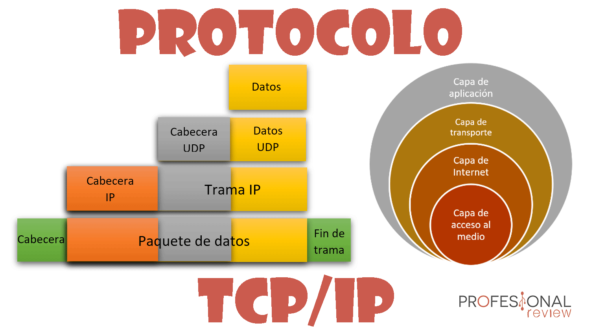

Conceptos Basicos de Internet
¿Que es el Internet?
¿Que son los Proveedores de Internet
Tipos de Proveedores de Internet
¿Que es la experiencia de Usuario?
¿Que es la Interfaz de Usuario?
¿Que son los protocolos de Internet?
¿Que es HTML?
¿Que es el Internet?
 9.30.09.png)
Internet es una red de computadoras que se encuentran interconectadas a nivel mundial para compartir información.
Se trata de una red de equipos de cálculo que se relacionan entre sí a través de la utilización de un lenguaje universal.
El concepto Internet tiene sus raíces en el idioma inglés y se encuentra conformado por el vocablo inter
(que significa entre) y net (proveniente de network que quiere decir red electrónica). Es un término que siempre
debe ser escrito en mayúscula ya que, hace referencia a “La Red” (que conecta a las computadoras mundialmente mediante
el protocolo TCP/IP) y sin un artículo que lo acompañe (el/la) para hacerle referencia.
Existen diferentes tipos de conexión a Internet, es decir, distintos medios por los cuales uno puede
obtener conexión a la red de redes. El primero de ellos fue la conexión por dial-up, es decir, tomando la conectividad de
una línea telefónica a través de un cable. Luego surgieron otros tipos más modernos como ser el ADSL,
la fibra óptica, y la conectividad 3G y 4G (LTE) para dispositivos móviles. Para acceder a los billones de
sitios web disponibles en la gran red de redes, que conocemos como la Internet, se utilizan
los navegadores web (software), siendo algunos de los más utilizados Google Chrome, Internet Explorer,
Mozilla Firefox, y Safari, todos desarrollados por distintas compañías tecnológicas.
¿Que son los proveedores de internet?

El proveedor de servicios de internet (ISP, por las siglas de Internet Service Provider) es la empresa que
brinda conexión a Internet a sus clientes. Un ISP conecta a sus usuarios a Internet a través de diferentes
tecnologías como ADSL, cablemódem, GSM, dial-up, fibra óptica, satélite, streaming, etc.
Generalmente las compañías telefónicas se encargan de brindar estos servicios, aunque existen empresas
especializadas solo en el servicio de Internet. Los proveedores de este servicio ofrecen diferentes paquetes
dependiendo de la calidad y ancho de banda de la conexión, los cuales se contratan por parte de los clientes.
Tipos de Proveedores de Internet

Los proveedores ISP se clasifican de la siguiente manera:
Proveedores de acceso, que dan acceso a Internet mediante módems telefónicos, cables, Ethernet (Internet inalámbrica) o fibra óptica. Internet inalámbrico, incluye acceso a Internet móvil y acceso a Internet vía satélite.
ISPs de buzones, que alojan dominios de nombre de correo electrónico y ofrecen espacio de almacenamiento para los buzones de correo de sus usuarios. Algunos ISP de buzones también pueden ser proveedores de acceso.
ISPs de alojamiento, que proporcionan alojamiento web y almacenamiento en la nube.
ISPs de tránsito, que generalmente tienen redes más pequeñas pero a su vez, pagan ISPs ascendentes, más grandes, para conectarse a redes más amplias.
ISPs virtuales compran servicios de otros proveedores de Internet. Como regla general, los clientes de ISP virtual utilizan la red y los servicios del proveedor, de donde el ISP virtual compró los servicios.
ISPs gratuitos, que brindan acceso gratuito a Internet. Sin embargo, al igual que los canales comerciales de televisión, muestran anuncios a sus usuarios mientras están conectados.
ISPs inalámbricos, que brindan acceso a Internet a través de redes inalámbricas.
¿Que es experiencia de usuarios?

La experiencia de usuario, también llamada user experience o simplemente UX, se define como el conjunto de factores y
elementos relacionados con el proceso de interacción de un usuario respecto a un producto o servicio. A menudo,
este concepto se aplica a la interacción con páginas web y aplicaciones.
De la misma manera, hay que saber que la experiencia de usuario no es universal, ya que los
usuarios reaccionan de maneras diversas en diferentes situaciones y además, en el caso de los contenidos
digitales, van a consumirlos desde diferentes dispositivos.
Un diseño que funciona a la perfección en un caso concreto puede tener el efecto opuesto sobre otro usuario.
Podemos enfocar la experiencia de usuario para estimular ciertos comportamientos o reacciones, pero nunca podremos
predecir exactamente lo que harán los usuarios. Por eso, un elemento muy importante de la UX son los tests A/B.
¿Que es interfaz de Usuario?

La interfaz de usuario (UI) es el punto de interacción y comunicación humano-computadora en un dispositivo.
Esto puede incluir pantallas de visualización, teclados, un mouse y la apariencia de un escritorio. También es
la forma en que un usuario interactúa con una aplicación o un sitio web.
La creciente dependencia de muchas empresas de las aplicaciones web y las aplicaciones móviles ha
llevado a muchas empresas a dar mayor prioridad a la interfaz de usuario en un esfuerzo por mejorar la
experiencia general del usuario.
¿Que son los Protocolos de Internet?

El Protocolo de Internet (IP) es un protocolo, o conjunto de reglas, para enrutar y direccionar paquetes de datos
para que puedan viajar a través de las redes y llegar al destino correcto. Los datos que atraviesan Internet se
en trozos más pequeños, llamados paquetes. La información IP se adjunta a cada paquete, y
esta información ayuda a los enrutadores a enviar los paquetes al lugar correcto. A cada dispositivo o
que se conecta a Internet se le asigna una dirección IP, y a medida que los paquetes se dirigen a la
IP adjunta, los datos llegan a donde se necesitan.
El Protocolo de control de transmisión (TCP) es un protocolo de transporte, lo que
significa que dicta la forma en que se envían y reciben los datos. Se incluye un encabezado TCP en
la parte de datos de cada paquete que utiliza TCP/IP. Antes de transmitir los datos, TCP abre una conexión
con el destinatario. TCP garantiza que todos los paquetes lleguen en orden una vez que se inicia la transmisión.
Mediante TCP, el destinatario acusará recibo de cada paquete que llegue. Los paquetes que falten se enviarán de nuevo
si no se acusa recibo.
¿Que es HTML?

HTML: Lenguaje de etiquetas de hipertexto
HTML es el lenguaje con el que se define el contenido de las páginas web. Básicamente se trata
de un conjunto de etiquetas que sirven para definir el texto y otros elementos que compondrán una página web,
como imágenes, listas, vídeos, etc.
"Hipertexto" hace referencia a los enlaces que conectan páginas web entre sí, ya sea dentro de un único sitio web
o entre sitios web. Los enlaces son un aspecto fundamental de la Web. Al subir contenido a Internet y
vincularlo a las páginas creadas por otras personas, te conviertes en un participante activo en la «World Wide Web»
(Red Informática Mundial).